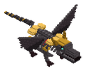
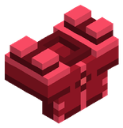
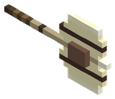
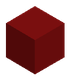

Bestiario › Jefe


Variantes de color
Vorgrath el Dracolich de Adamantio
Dracolich de Adamantio
Hostil Cuadrúpedo Jefe
Dragón esqueleto reanimado de hueso blanco blindado con placas de adamantio carmesí; en su costillar abierto late un núcleo de sangre de hierro y sus alas son jirones colgando de los huesos.
320Nivel
259,2Vida
7,87Daño
32Armadura
0Regeneración
4Velocidad
Dónde aparece
| Jefe de mazmorra | La Necrópolis Dracónica de Adamantio (nivel 280) |
|---|
Efectos de sus ataques
- Veneno · 40 % · 5 s (al golpear)
- Sangrado · 30 % · 3 s (al golpear)
- Empuje · 15 (al golpear)
Botín
| Objeto | Cantidad | Probabilidad |
|---|---|---|
 Pechera de Adamantio Carmesí | 1 | 100 % |
 Gran Hacha de Fósil Dracónico | 1 | 100 % |
 Núcleo de Sangre de Hierro | 1 | 100 % |
 Carne Dracónica Carne Dracónica | 3 – 5 | 100 % |
Combate de jefe
Escala ×1 · radio de la arena 80 bloques.
- Por debajo del 66 % de vida: armadura ×1,5 — «¡Vorgrath levanta muros de hueso!»
- Por debajo del 33 % de vida: daño ×1,4 — «¡Vorgrath exhala ceniza cáustica!»
Archivo de datos: mods/mobs/vorgrath.json · tamaño del vóxel 0,4 m · cuerpo de 3 × 4 bloques